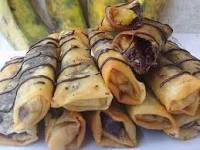
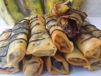

Restoran
Makan Fatin
Kalau Ngaku pecinta pedas,kalian musti cobain nih !!
Ini dia menu baru kedua dari Restoran kami!Menu baru lainnyadari Restoran super pedas yang
wajib kamu coba,Chicken Katsu Geprek dan Chicken Katsu Geprek Mentai,Martabak,Pempek Kapal Selam,
Ayam panggan,Piscok,Kacang,Coklat dan Mie Goreng.
Hujan yang turun dari pagi bisa jadi salah satu kesempatan kamu untuk berinteraksi lama dengan menghabiskan
waktu untuk makan siang dan menikmati nasi
Restoran Fatin juga hadir sebagai Restoran Online
yang akan memudahkan masyarakat dalam memesan Makanan dimana pun dan kapan pun
dengan cara Delivered

 


Daftar Menu Makanan
- Martabak
- Ayam Panggan
- Pempek Kapal Selam
- Piscok
- Kacang
- Coklat
- Mie Goreng
Prasarana Usaha Fatin
| No. | Nama Usaha | Kategori Harga |
|---|---|---|
| 1 | The Ducking King | Restoran Premium |
| 2 | Waroeng Starduck | Restoran Premium |
| 3 | Pangeran Bebek | Restoran Premium |
| 4 | Bebek Garang | Restoran Premium |